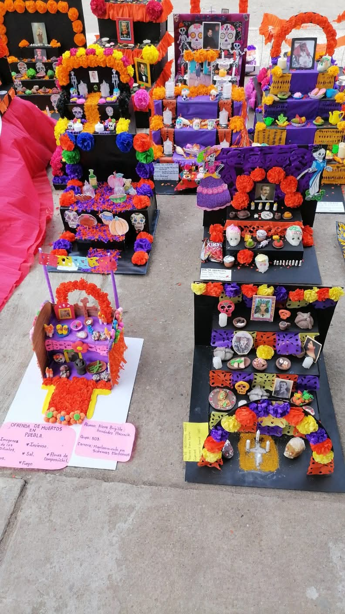
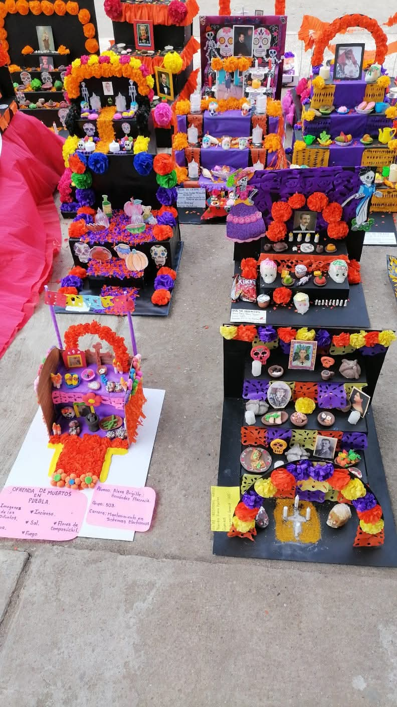

CONALEP 052
Participación estudiantes
Participación CONALEP 052
 

Concurso de altar de muertos
Nuestros estudiantes concursaron entre los diferentes grupos. En los altares y vestimenta se dio a conocer la creatividad que tuvo cada uno de ellos y la organización y participación como grupos.
Torneo Interescolar de Voleibol
El equipo de voleibol femenil y masculino de nuestro plantel representó al CONALEP en el torneo contra otros planteles, demostrando disciplina y trabajo en equipo. Este logro representa nuestro compromiso con el desarrollo integral de los estudiantes.


Actividad enfermería
Presentamos actividades de ayuda ante un simulacro y cómo cuidar nuestra salud a través de una buena alimentación y una fuente de información confiable. Nuestros estudiantes de la carrera de enfermería participaron con entusiasmo.


Mantenimiento CONALEP
Nuestro plantel tuvo mantenimiento de limpieza con ayuda de los integrantes de seguridad, policías y militares. Participaron junto con estudiantes, realizando actividades como pintar y sembrar árboles.